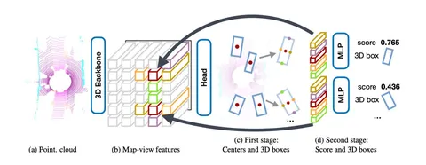
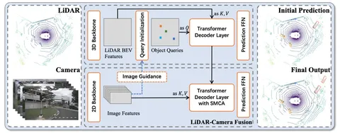

Сегодня разберём сразу две статьи о SoTA-способах предсказывать положения объектов.
Center-based 3D Object Detection and Tracking
Если коротко, это Objects as Points. Авторы решают задачу детекции на облаках точек с помощью CenterNet на BEV-фичах.
CenterNet — 2D-object-детектор. Вместо поправок к anchor-боксам он предсказывает center-боксы (их размеры, глубины, ориентацию).
В CenterPoint авторы добавили стадию рефайнмента предсказанных боксов на основе BEV-фичей, взятых из середин граней боксов CenterNet.
Архитектура (на первой схеме) состоит из трёх основных этапов:
1. 3D-Backbone выделяет фичи из облака точек.
2. СenterNet помогает получить из фичей 3D-боксы и их центры.
3. На стадии рефайнмента для каждого бокса по расположению достают и стакают 5 BEV-фичей. Перцептрон рассчитывает поправки к боксу и уверенность в нём (score) — это помогает уточнить предсказания.
Center-based-подходы лучше работают на классах объектов с особенностями — например, с необычными размерами. По результатам на nuScenes, авторы считают свой подход SoTA.
TransFusion: Robust LiDAR-Camera Fusion for 3D Object Detection with Transformers
В этой статье авторы решают задачу детекции с помощью данных камеры и лидара: мягко объединяют их с помощью cross-attention.
В основе TransFusion — DETR-like-подход с инициализацией object queries в локальных максимумах хитмапа, предсказанного по BEV-фичам.
DETR преобразует фичи объекта в вектора, добавляет positional encoding и подаёт результат на вход трансформер-декодера — так получаются вектора фич, которые знакомы с исходной картинкой.
Голова-детектор (вторая схема) состоит из двух последовательных трансформеров-декодеров:
Механизм SMCA между object queries и данными с камер помогает модели лучше отслеживать связанные области изображения.
TransFusion также показал SoTA-результаты на nuScenes. Авторы предлагают использовать этот подход для ускорения и упрощения задач 3D-сегментации.
Разбор подготовил
404 driver not found

